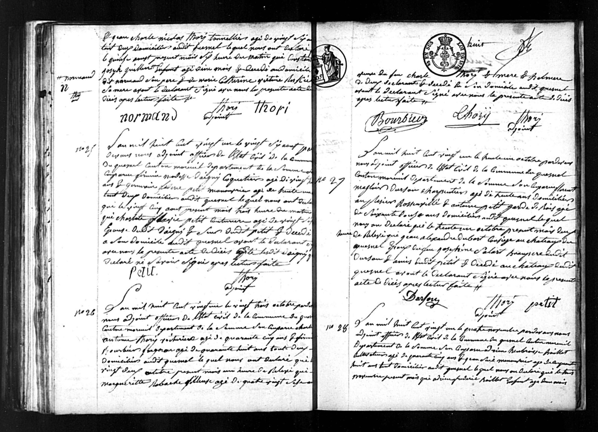

Acte d'état civil
Le Quesnel, décès de Jean Alexandre Dubart, 31/10/1821
Ce document établit
- Jean Alexandre Dubart est mort le 31/10/1821, à deux heures de relevée, au château du Quesnel vérifié A0157
« « Jean Alexandre Dubart, concierge au château du Quesnel, époux de feu Josephine Salart […] est décédé au château dudit Quesnel » »
- En 1821, Jean Alexandre Dubart est concierge au château du Quesnel vérifié A0158
« « concierge au château du Quesnel » »
- Florent Magloire Durson, charpentier, 30 ans, au Plessier-Rozainvillers, est le gendre de Jean Alexandre Dubart et déclare son décès ; Antoine Petit, garde de bois, 72 ans, se dit son ami vérifié A0159
« « beau-père dudit Durson et ami dudit Petit » »
- Hypothèse : Jean « Alexandre » Dubart, concierge du château du Quesnel, était au service des familles Le Fort ou Blin de Bourdon. non résolu A0099
« concierge au château du Quesnel »
- L'acte de mariage de Thaïs (4/10/1828) dit Jean Alexandre Dubart « décédé en la commune du Quesnel le trente octobre mil huit cent vingt un » ; l'acte de décès lu (n° 27) le dit mort le 31 octobre 1821 à deux heures de relevée et déclaré le même jour : la date de 1828 est un écart de un jour, non expliqué vérifié A0763
« « le trente un octobre présent mois, deux heures de relevée […] Jean Alexandre Dubart […] est décédé au château dudit Quesnel » » (lecture incertaine : non)
Ce document contredit
- L'arbre dit « concierge du château de Quesnel » : AUCUNE pièce lue ne le dit réfuté A0152
« concierge au château du Quesnel »
Lire la transcription intégrale : Transcriptions : DUBART × SALLART (Le Quesnel) →
Personnes concernées
transcription T2